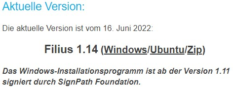

Filius est un logiciel libre et gratuit conçu pour réaliser des simulations de réseaux informatiques. Il s'agit d'un logiciel allemand mais, lors de l'installation, vous pourrez choisir la langue française ou anglaise.
La première étape de cette installation est bien évidemment de vous rendre sur ce site.
Cliquer alors sur :
Puis attendre la fin du téléchargement.
Une fois le téléchargement terminé, ouvrir le gestionnaire de fichier windows (l'icone dossier vous permettant d'accéder à vos fichiers).
Aller dans "Téléchargements" ou "Downloads".
Double cliquer sur le fichier que vous venez de télécharger.
Le choix de la langue vous est alors proposer, choisissez français puis appuyez sur "ok".
Choisissez "Installer uniquement pour moi"
Et voila, c'est terminé !
Au lancement du logiciel, vous obtenez l'interface ci-dessous :
 Mode construction :
Mode construction :